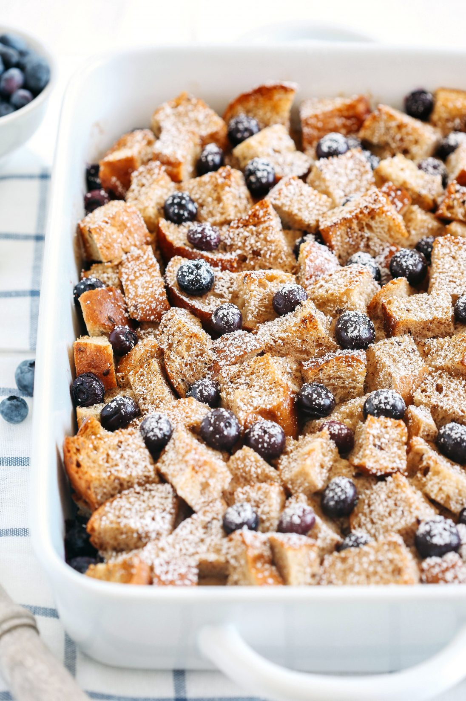

Blue Berry Frech Toast Casserole

This is one blueberry filled treat that you will never forget!
This easy dessert is something you can eat after dinner and for breakfast the next morning. Bring it over as a party gift or set it out on the table for holiday gatherings.
Ingredients
- 12 slices bread cut into 1-inch cubes
- 8 ounces cream cheese softened
- ¼ cup sugar
- 1 tablespoon lemon juice
- 1 ½ cups blueberries divided, fresh or frozen
- 12 eggs
- 2 cups milk
- ⅓ cup maple syrup
- 2 tablespoons tomato paste
- 1 teaspoon lemon zest
- ½ cup oats
- ¼ cup butter softened
- 1¼ cup flour
- 3 tablespoons brown sugar
- 3 tablespoons white sugar
- 1 teaspoon cinnamon
Steps
- Leave your bread out for a few hours or place it on a tray at 350˚F for about 8 minutes to slightly dry it out.
- In a medium bowl, combine cream cheese, sugar and lemon juice until fluffy.
- Grease a 9x13 inch baking dish. Layer half of the bread cubes in the pan. Top with cream cheese mixture & half the blueberries. Top with remaining bread and blueberries.
- In a bowl, stir together the eggs, milk, syrup, and lemon zest until well mixed. Pour over the bread cubes, cover with foil, and refrigerate overnight.
- Remove the casserole from the fridge about 45-60 minutes before baking. Preheat the oven to 350°F.
- Mix topping ingredients together in a small bowl. Sprinkle over casserole just before baking.
- Bake uncovered 45-55 minutes or until a knife inserted in the center comes out clean and is hot.